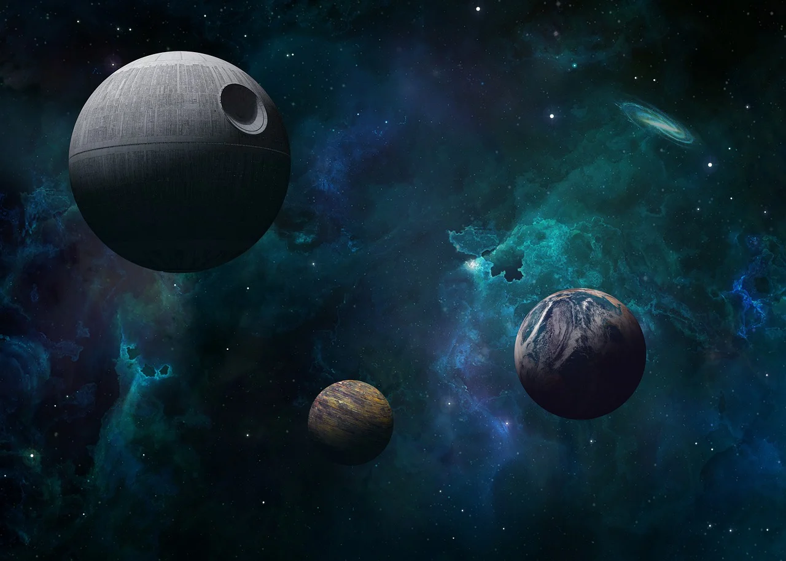
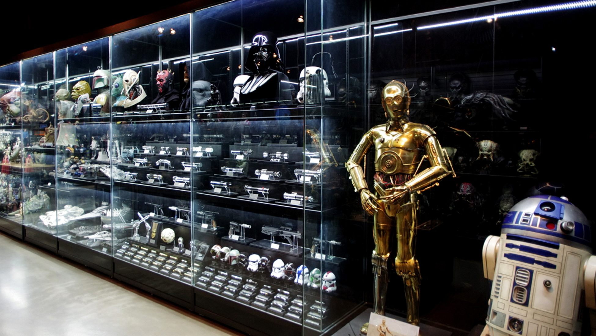
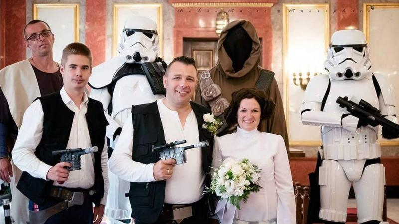
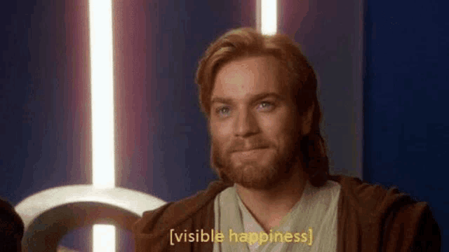
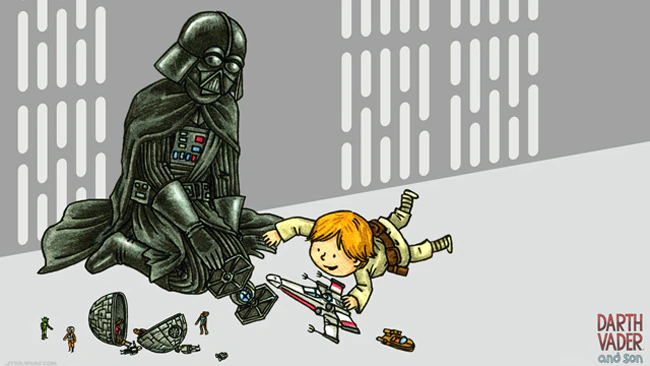

Hogy mi található ezen az oldalon?

Ez az oldal bemutatja a Star Wars univerzum legfontosabb karaktereit, bolygóit és a filmek során fontos szerepet betöltő eseményeket.
A látogatók betekintést nyerhetnek a galaxis legnagyobb hőseibe és ellenségeibe, valamint megismerkedhetnek a különböző bolygókkal,
amelyek kulcsfontosságú helyszínei a történeteknek. Az idővonal segítségével áttekinthetjük a galaxis történelmét,
az egyes korszakokat és az összes fontos eseményt, amelyek meghatározták a Star Wars univerzumot.

A harmadik oldal a Star Wars rajongóknak egy igazi paradicsom, ahol mindenki megtalálhatja a legnépszerűbb űrhajókat, fegyvereket,
könyveket, ruházatot és képregényeket. Az oldal lehetőséget biztosít a rajongók számára, hogy ízlésüknek megfelelően könnyen megtalálják és
megvásárolják kedvenc Star Wars kiegészítőiket. Legyen szó akciófigura gyűjtésről, vagy egy új Star Wars könyv beszerzéséről, itt mindent megtalálhatsz.

Ezen az oldalon a rajongók olvashatják és megoszthatják az aktuális Star Wars eseményeket. Itt találhatók a legfrissebb filmek, rendezvények, és rajongói találkozók
időpontjai, valamint egyéb közösségi események, amelyek lehetőséget adnak új élmények szerzésére és új emberek megismerésére.
A közösségi élmények mellett itt beszélgethetünk a legújabb Star Wars trendekről, alkotásokról és egyéb érdekes eseményekről.

Ha egy kis szórakozásra vágysz, akkor a mémek oldalon biztosan megtalálod, amit keresel!
Itt a rajongók megoszthatják a legviccesebb Star Wars mémeket, amelyek garantáltan mosolyt csalnak az arcodra.
Ha szereted a kreatív és humoros tartalmakat, itt órákra el tudsz merülni az internet legjobb Star Wars mémjeiben.

Ez az oldal különösen az új rajongók számára hasznos, hiszen lehetőséget ad arra, hogy leteszteljék tudásukat a Star Wars univerzumról.
A kvízek és tesztek különböző szintűek, így mindenki megtalálhatja a saját szintjének megfelelő kihívást.
Ha mindig is kíváncsi voltál arra, hogy mennyire vagy igazi Star Wars szakértő, itt megtudhatod!